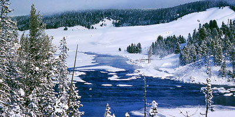
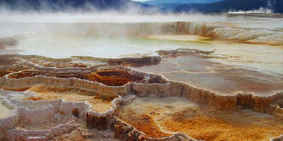
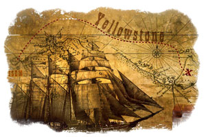
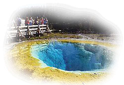
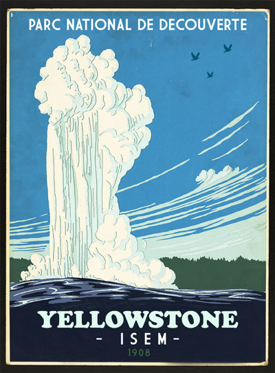

Plus de détails sur le parc de Yellowstone
Situation et caractéristiques générales
Le parc national de Yellowstone se trouve dans le Nord-Ouest des États-Unis. Il est à cheval sur trois États (Idaho, Montana et Wyoming) mais la plus grande partie du parc se trouve au nord-ouest du Wyoming. Le centre du parc se situe à 110°30'03'' de longitude ouest et 44°36'53'' de latitude nord (à la même latitude que la ville de Bordeaux, Gironde).
Des terres publiques (Federal Lands) entourent le Yellowstone et le Parc national de Grand Teton se trouve à quelques kilomètres au sud. Le parc de Yellowstone s'étend sur 8 983 km2 (898 317 hectares), dont 96 % se trouvent dans l'État du Wyoming6, 3 % sur le Montana et 1 % en Idaho ; le parc mesure 102 km du nord au sud, et 87 km d'est en ouest.
Relief
Le parc de Yellowstone est situé sur un haut plateau, à une moyenne de 2 400 mètres d'altitude. Les altitudes du parc sont comprises entre 3 462 mètres à Eagle Peak et 1 610 mètres à Reese Creek. La région est entourée par des massifs appartenant aux Montagnes Rocheuses, dont les sommets atteignent entre 3 000 et 4 000 mètres d'altitude : au nord-ouest la chaîne Gallatin, au nord les Beartooth Mountains, à l'est et au sud-est l'Absaroka Range, au sud la Teton Range et à l'ouest le massif de Madison.
Le plus haut sommet du plateau et du parc de Yellowstone est le Mont Washburn qui culmine à 3 122 mètres. La gigantesque caldeira (70 km de diamètre) de Yellowstone se trouve au centre du parc ; elle est presque entièrement recouverte par des débris volcaniques, ces formations superficielles masquent ainsi les formes de relief d'origine tectonique et plus spectaculaires.
Deux gorges sont situées dans le parc : Yellowstone River Canyon et Lewis Canyon. Ils ont été progressivement creusés depuis 640 000 ans par les cours d'eau qui traversent le plateau volcanique du Yellowstone.
Climat
En hiver, le parc est sous une épaisse couverture de neige Le climat est montagnard. Les températures et les précipitations varient sensiblement en fonction de l'altitude et du moment de la journée.
Le secteur Sud-Ouest du parc reçoit davantage de pluie que la portion Nord. Les hivers sont froids (entre -20 °C et -5 °C en journée et inférieur à -20 °C la nuit) et neigeux. Pendant cette saison, seule l'entrée nord près de Gardiner est ouverte aux véhicules. La température la plus basse jamais enregistrée est de -54 °C en 1933. Les précipitations neigeuses varient fortement selon les saisons (il neige de l'automne au printemps avec un maximum en janvier) et l'altitude.
En moyenne, il tombe entre 182 et 380 cm de neige sur l'année près du lac Yellowstone mais l'épaisseur du manteau atteint le double aux sommets des montagnes environnantes. Les tornades sont rares dans le parc bien que la tornade la plus puissante de l'État du Wyoming se soit produite dans le parc le 21 juillet 1987. Celle-ci était classée F4 sur l'échelle de Fujita ce qui correspond à des vents compris entre 330 et 420 km/h. 61 km2 de forêt de pins furent abattus.
Le nom « Yellowstone »
Le nom « Yellowstone » ( pierre jaune » en français) provient de la couleur des rochers du grand canyon de Yellowstone (vallée en « V ») qui a été formé lors des dernières glaciations avant d'être fortement érodé par la rivière Yellowstone.
Contrairement aux apparences, la couleur des pierres provient de l'altération hydrothermale du fer qu'elles contiennent et non du soufre qui est toutefois présent.
Yellowstone se situe à l’extrémité nord-orientale de la plaine de Snake River qui forme un arc en « U » à travers les Montagnes Rocheuses. La plaine s’étend sur 400 km vers l’ouest à partir de la ville de Boise dans l'État de l'Idaho. La caldeira de Yellowstone est le plus grand système volcanique d’Amérique du Nord. Il appartient à la catégorie des « supervolcans » et ses éruptions dépassent de loin celles des volcans « classiques ».
Origines
Cette plaque tectonique s'est déplacée sur un point chaud du manteau terrestre. Entre huit ou seize kilomètres sous la caldeira de Yellowstone5 se trouve une cavité appelée chambre magmatique qui contient une masse de magma pour l'essentiel cristallisée et sous haute pression.
Cette chambre gigantesque a une capacité maximale de 15 000 km3 à 20 000 km3, ce qui représente à peu près la taille du massif du Mont-Blanc. Un point chaud est, comme son nom l'indique, un endroit de la croûte terrestre qui est plus « chaud » que le reste du globe. En effet, dans les profondeurs du manteau (la base du manteau supérieur pour ce qui concerne le Yellowstone) un panache de magma plus chaud que la normale remonte et provoque la fonte du manteau situé en dessous de la croûte terrestre avant de la percer comme le ferait un chalumeau avec une plaque de fer.
Cette poussée forme une sorte de dôme sous la croûte terrestre. Une fois arrivés juste en dessous de la surface, les gaz et le magma en partie refroidis forment donc une chambre magmatique générant des volcans en dehors de toutes zones de subduction. Yellowstone se distingue des autres volcans par sa forme originale. En effet, ce volcan se manifeste sous la forme d'une caldeira étendue alors que les volcans classiques sont plutôt coniques : c'est ce qu'on appelle une caldeira active. Yellowstone est de plus le seul volcan explosif placé sur un point chaud mais il n'est pas la seule caldeira active.
Explorations
En 1806, un membre de l'expédition Lewis et Clark, appelé John Colter, quitta ses compagnons de voyage pour rejoindre un groupe de trappeurs et fut sans doute le premier homme d'origine européenne à visiter cette région et à entrer en contact avec les tribus amérindiennes. Durant l'hiver 1807-1808, Colter traversa un secteur de l'actuel parc et observa les phénomènes géothermiques près de Tower Falls. Après avoir survécu à des blessures reçues lors de combats contre les tribus
Corbeaux et Pieds-Noirs en 1809, il livra une description d'une région pleine de « feu et de soufre », que l'on mit à l'époque sur le compte du délire. Pendant les 40 années qui suivirent, de nombreux récits de trappeurs évoquèrent les eaux bouillonnantes, les geysers et les arbres pétrifiés sans trouver beaucoup de crédit. En 1857, Jim Bridger revint d'une autre expédition dans la même région et raconta avoir vu des sources bouillantes, de l'eau jaillissante, une montagne de glace et des pierres jaunes. Ce récit fut généralement ignoré, car Bridger avait la réputation d'être un affabulateur.
Pourtant, son témoignage suscita l'intérêt de l'explorateur et géologue Ferdinand Vandeveer Hayden, qui monta une autre expédition en 1859 pour étudier le haut Missouri, avec Bridger comme guide, accompagné d'un géomètre de l'armée américaine, W.F.Raynolds. Le groupe s'approcha du Yellowstone mais ne put l'atteindre en raison de fortes chutes de neige.
Le début de la Guerre de Sécession interrompit alors les recherches pendant 11 ans. Cette peinture de William Henry Jackson, The Hayden Survey décrit l'exploration d'un lac au Yellowstone (1871) L’expédition Folsom de 1869 est la première à donner une description détaillée de la région du Yellowstone. Elle remonta la rivière Yellowstone jusqu’au lac Yellowstone.
En 1870, des habitants du Montana organisèrent à leur tour une expédition (Washburn-Langford-Doane Expedition), menée par le topographe Henry Washburn et à laquelle participèrent Nathaniel P.
Langford (qui deviendra le premier surintendant du parc avec le surnom de « National Park Langford ») et un détachement de l’Armée américaine commandé par le lieutenant Gustavus Doane. Pendant un mois, ils étudièrent la région, collectèrent de nombreux spécimens et baptisèrent plusieurs sites.

Cornelius Hedges, un écrivain et avocat du Montana, avait participé à l'expédition Washburn. Le journal Helena Herald publia plusieurs articles consignant ses observations entre 1870 et 1871. Il fut l'un des premiers, avec le gouverneur du Montana Thomas Francis Meagher, à proposer de faire du Yellowstone un parc national protégé.
Dans une lettre de 1871, adressée à Ferdinand Hayden par Jay Cooke, ce dernier affirmait que son ami le sénateur William D. Kelley avait suggéré de passer une loi permettant de faire du Yellowstone un parc public.
En 1871, Hayden dirigea une deuxième et plus importante expédition, financée cette fois-ci par le gouvernement.
Il rédigea un rapport complet sur le Yellowstone, illustré par les photographies de William Henry Jackson et les illustrations de Thomas Moran, ce qui incita le Congrès américain à protéger cette région.
Le 1er mars 1872, le président américain Ulysses Grant signa le décret créant le Yellowstone National Park afin d'en faire un lieu « exempt d'exploitation mercantile, voué à la satisfaction du peuple ». La vallée Hayden tire son nom du géologue.
Philetus Walter Norris Nathaniel Langford occupa bénévolement pendant cinq ans la fonction de surintendant et fut suivi par d'autres, qui travaillèrent avec des moyens très modestes. Longford se retira en 1877.
Le deuxième surintendant, Philetus Norris, réussit à obtenir un petit salaire et quelques subventions, destinées à contrôler le vandalisme et le braconnage dans le parc. Il fit construire quelques équipements et des routes.
La fréquentation du parc augmenta rapidement, passant de 300 visiteurs en 1872 à 5 000 en 1883.
De 1900 à nos jours
C'est à cette époque (en 1882) que 400 Tukadika (une branche des Shoshones du nord), résidant sur le territoire du Yellowstone, ont été déportés de force vers la réserve de Wind River. À cette époque, les touristes disposaient de peu de routes et de services et se déplaçaient à cheval ou en diligence. En 1908, une seconde voie ferrée, qui fonctionna jusque dans les années 1960, permettait d'accéder à West Yellowstone par l'Union Pacific Railroad. En 1881, Albert Bierstadt peignit les chutes du Yellowstone : l'œuvre incita le président Chester A. Arthur à visiter le parc en 1883.
Afin de pallier l'insuffisance des moyens pour protéger le parc national, l'administration de Yellowstone fut confiée à l'armée entre 1886 et 1918. Un corps de gardes civils spécifiques (les rangers) fut créé et placé sous l'autorité du National Park Service. Le Fort Yellowstone fut aménagé à partir de 1891 pour les héberger. En 1909, l'ensemble des bâtiments pouvait accueillir 400 hommes, soit quatre troupes.
L'armée céda le contrôle du Yellowstone au National Park Service le 31 octobre 1918. Au début du xxe siècle, les États-Unis construisirent une route de 235 kilomètres en forme de « 8 » permettant de relier les points les plus intéressants du parc. Le tracé définitif de la Grand Loop Road date de 1905. Le Président américain Theodore Roosevelt visita le Yellowstone en 1903.
Il déposa la pierre angulaire de la Roosevelt Arch à l'entrée nord du parc. En 1915, un millier d'automobiles eurent accès au parc, ce qui provoqua des problèmes de circulation avec le transport à cheval, qui fut par la suite interdit. Entre 1933 et 1941, le Civilian Conservation Corps construisit les centres d'information touristique, les terrains de camping et la plupart des routes actuelles. Pendant la Seconde Guerre mondiale, le nombre d'employés et de visiteurs diminua, entraînant l'abandon de plusieurs infrastructures.
311 espèces d'oiseaux, 18 espèces de poissons, six de reptiles, quatre d'amphibiens ont été recensées dans le parc.
Faune
Le Yellowstone abrite une soixantaine d’espèces de mammifères parmi lesquelles le loup gris (espèce en danger et réintroduite), le lynx et le grizzli.
Le parc abrite plusieurs espèces menacées.
Les autres grands mammifères du parc sont le bison, l’ours noir, le puma, le wapiti, l’élan, le cerf hémione, le pronghorn, la chèvre des montagnes rocheuses et le mouflon canadien.
Flore
Pins tordus Le parc compte environ 1 700 espèces endémiques d’arbres, de plantes et de lichens, auxquelles il faut ajouter 170 espèces introduites. On peut trouver huit espèces différentes de conifères dont le pin tordu (Pinus contorta) qui est le plus répandu. Les autres conifères, tels que le sapin de Douglas ou le pin à écorce blanche sont dispersés dans plusieurs secteurs du Yellowstone. Les feuillus les plus fréquents sont le peuplier et le saule.
Les forêts de trembles ont considérablement reculé depuis le début du xxe siècle. Il existe par ailleurs des dizaines d’espèces de plantes à fleur, dont la plupart éclosent entre mai et septembre.
La Yellowstone Sand Verbena, une abronie, est une plante à fleur très rare (environ 8 000 specimens) qui pousse dans le sable des rives du Lac Yellowstone. Des plantes invasives menacent les espèces autochtones en consommant les ressources nutritives.
Écosystème
Le parc national de Yellowstone fait partie d’un écosystème étendu sur près de 80 937 km2 qui comprend également d’autres réserves naturelles telles que le Parc national de Grand Teton et des forêts nationales. Cet écosystème constitue la plus grande étendue vierge d’un seul tenant aux États-Unis, en dehors de l’Alaska. Il est généralement considéré comme le plus vaste milieu encore intact de la zone tempérée nord. Grâce au programme de réintroduction du loup mis en place dans les années 1990, toutes les espèces qui vivaient dans la région avant l’arrivée des Européens en Amérique sont encore présentes.
80 % de la superficie du Yellowstone est recouverte par la forêt. Le reste du parc est constitué de zones humides (5 % de lacs, étangs et cours d'eau) ou tapissé de prairies (15 %). Les milieux naturels sont différents d'un secteur à l'autre et dépendent de plusieurs facteurs : altitude, exposition des versants, etc. Le Yellowstone comporte plusieurs centaines d'espèces de plantes et de 186 espèces de lichens. Le parc abrite plusieurs espèces menacées (pygargue à tête blanche, grizzli, lynx, grue américaine). La faune est riche de sept espèces d'ongulés, deux espèces d'ours et environ 50 autres espèces de mammifères. 311 espèces d'oiseaux, 18 espèces de poissons, six de reptiles, quatre d'amphibiens ont été recensées dans le parc.